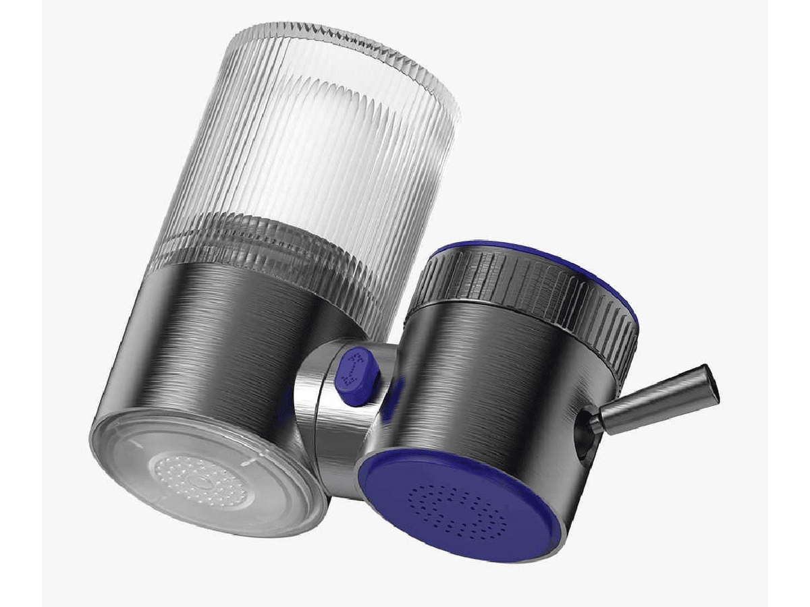

Keran
KeranRP-F01
Filter keran klasik
SKU: RP-F01
MOQ: Konfirmasikan saat bertanya
Beranda/Produk/Filter Keran/ RP-F08

Filter Keran
Filter keran (JK-D1) — tiga opsi. RP-F08 memimpin keluarga.
RP-F08 adalah keluarga filter keran: tiga opsi pada platform keramik 1,5–2 L/mnt, 2–5 µm yang sama — model tampilan masa pakai filter (tampilan 100% digital, lampu biru bertenaga air); model mikrobubble (saluran ganda, mikrobubble 1–100 µm untuk perawatan kulit dan pembersihan); dan model pembersih busa (empat mode, penyemprot busa genggam). Spesifikasi dikonfirmasi per model dan pesanan.
Opsi tampilan dan finishing dikonfirmasi per pesanan.
Tegangan / frekuensi dapat dikonfigurasi sesuai negara tujuan. Konfigurasi lain dikonfirmasi per pesanan.
RP-F08 adalah keluarga filter keran (JK-D1) dengan tiga opsi pada platform keramik 1,5–2 L/mnt, 2–5 µm yang sama: model tampilan masa pakai filter (tampilan 100% digital, lampu biru bertenaga air), model mikrobubble (saluran ganda, mikrobubble 1–100 µm untuk perawatan kulit dan pembersihan), dan model pembersih busa (empat mode, penyemprot busa genggam). Ketiganya berbagi umur kartrid 3–6 bulan, suhu air 5–38°C, tekanan kerja 0,1–0,4 MPa, dan air keran kota sebagai sumber air. Dimensi dikonfirmasi per pesanan.
Berapa jumlah pesanan minimum?
Pesanan pertama adalah 200 unit per model, dan pemesanan ulang adalah 500 unit.
Bisakah saya memesan sampel sebelum pesanan massal?
Ya. Sampel siap dalam 15 hari, dan biaya sampel dikembalikan pada pesanan massal pertama Anda. Pesanan massal membutuhkan 40 hari setelah persetujuan sampel dan dikirim FOB Shenzhen.
Berapa lama kartrid bertahan?
Umur kartrid 3–6 bulan untuk ketiga model.
Tiga opsi filter keran — kutip sebagai RP-F08 dan sebutkan opsinya (tampilan masa pakai filter, mikrobubble, atau pembersih busa). Model tampilan masa pakai filter dilengkapi penutup gelap atau transparan.
Arahkan kursor ke gambar varian untuk melihat spesifikasinya. Di layar sentuh, ketuk gambar.


Spesifikasi lengkap untuk setiap model, berdampingan. Tabel spesifikasi di bawah menunjukkan nilai RP-F08.
| Spesifikasi | RP-F08-1 — tampilan masa pakai filter (JK-D1) | RP-F08-2 — mikrobubble (JK-H1) | RP-F08-3 — pembersih busa (JK-E2) |
|---|---|---|---|
| Jenis | Pemurni keran pintar | Pemurni keran mikrobubble untuk perawatan kulit | Filter keran pembersih busa 2-in-1 |
| Bentuk | Kartrid vertikal di atas alas horizontal | Bodi peluru horizontal | Alas lebar, dua katrid + selang melingkar + penyemprot genggam |
| Layar | Tampilan umur filter 100% digital | Tidak ada | Tampilan 100% pada beberapa varian |
| Saluran keluar | Saluran tunggal tersaring | Ganda: air murni + air mikrobubble | Empat mode: air mentah / air murni / busa / shower |
| Fungsi khusus | Lampu biru bertenaga air; penutup pasang-klik; tuas pegangan | Mikrobubble 1–100 µm; membersihkan dan menghilangkan residu pestisida | Pembersihan busa satu sentuhan; penyemprot busa genggam |
| Warnas | Biru tua, abu-abu, kuning, perak | Emas sampanye, biru-perak, ungu | Gelap, krem, putih, perak |
| Laju alir nominal | 1.5-2 L/min | 1.5-2 L/min | 1.5-2 L/min |
| Presisi filtrasi | 2-5 µm (keramik) | 2-5 µm (keramik) | 2-5 µm (keramik) |
| Suhu air | 5-38°C | 5-38°C | 5-38°C |
| Tekanan kerja | 0.1-0.4 MPa | 0.1-0.4 MPa | 0.1-0.4 MPa |
| Sumber air | Air keran kota | Air keran kota | Air keran kota |
| Umur kartrid | 3-6 bulan | 3-6 bulan | 3-6 bulan |
| Dimensi | Dikonfirmasi per pesanan | Dikonfirmasi per pesanan | Dikonfirmasi per pesanan |
Laju alir nominal, presisi filtrasi, suhu air, tekanan kerja, sumber air, dan umur kartrid sama di ketiga model (nilai katalog). Model-model tersebut berbeda dalam bentuk, tampilan, saluran keluar, dan fungsi khusus. Model tampilan masa pakai filter dilengkapi penutup gelap atau transparan.
7 baris spesifikasi dari katalog ROPureOEM.
| Laju alir nominal | 1.5-2 L/min |
|---|---|
| Presisi filtrasi | 2-5 µm (keramik) |
| Suhu air | 5-38°C |
| Tekanan kerja | 0.1-0.4 MPa |
| Sumber air | Air keran kota |
| Umur kartrid | 3-6 bulan |
| Dimensi | Dikonfirmasi per pesanan |
Spesifikasi diambil dari katalog ROPureOEM. Jika suatu nilai belum dikonfirmasi, nilai tersebut dicantumkan sebagai "Dikonfirmasi per pesanan" — kami tidak menerbitkan angka yang belum dikonfirmasi.
KeranFilter keran klasik
SKU: RP-F01
MOQ: Konfirmasikan saat bertanya

KeranFilter keran dapat diputar 360°
SKU: RP-F02
MOQ: Konfirmasikan saat bertanya
 Keran
KeranFilter keran serat karbon
SKU: RP-F06
MOQ: Konfirmasikan saat bertanya
 Keran
KeranFilter air terpasang di keran — terintegrasi
SKU: RP-F10
MOQ: Konfirmasikan saat bertanya